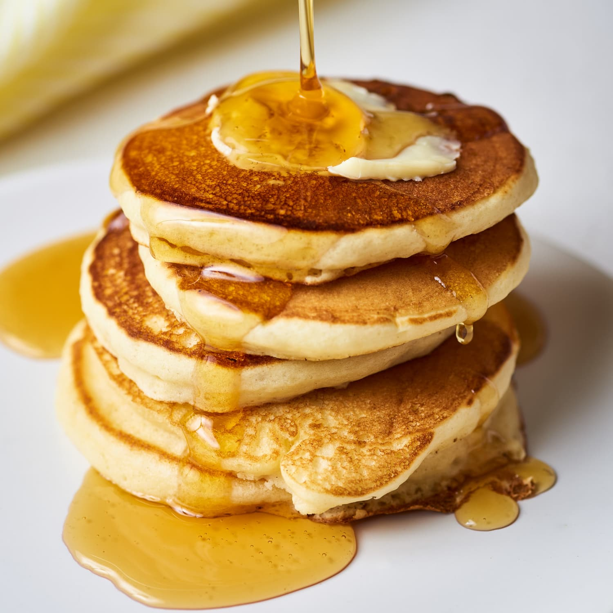

Pancake

A pancake is a flat cake, often thin and round, prepared from a starch-based batter that may contain eggs, milk and butter and cooked on a hot surface such as a griddle or frying pan, often frying with oil or butter. It is a type of batter bread.
Ingredients
- 77g cake flour
- 5g baking powder
- 25g sugar
- salt
- 1 egg
- 97g milk
Steps
- Mix all ingredients and whisk till no visible powders
- Heat skillet in medium-low heat
- Pour a spoon of batter. Wait 2-3 min till see small bubbles on the edges. Flip and cook for another 2 min
- Can serve with maple syrup, butter, or fruits you like
Back